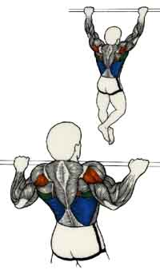
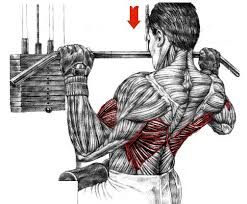
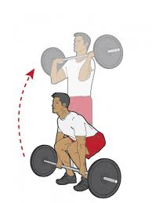
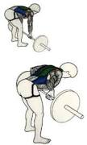
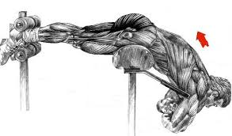
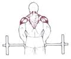

Cet exercice développe les muscles du dos, surtout en largeur. Les principaux muscles solicités sont le grand dorsal, le grand rond, le trapèze, le biceps et le triceps.Suspendu a une barre les mains espacé plus que la largeur d'épaules, l s'agit de se hisser plus ou moins haut a partir d'une position quasiment bras tendus.
Cet exercice sollicite les muscles du dos surtout de la largeur. Les muscles ciblées sont le grand dorsal, le grand rond, le petit rond et secondairement les bras. Ce mouvement est excellent pour le dos, il permet de travailler sur un angle intermédiaire, entre tirage nuque et tirage horizontal.
 Cet exercice n'est pas un exercice pour les debutants. En plus d’améliorer la puissance et la force nécessaires dans de nombreux sports, le Power Clean vous aidera à solliciter un maximum de muscles. Peu d’exercices mettent en jeu autant d’articulations : cheville, genou, hanche, épaule, coude et poignet. Cela implique que vous travaillerez en un seul mouvement les mollets, quadriceps, arrières cuisses, fessiers, trapèzes, épaules et les avant-bras.
Cet exercice travaille l'ensemble des muscles du dos, il est efficace pour gagner de la masse et épaissir le dos. Attention cet exercice est risqué a cause de l'inclinaison du dos. Cet exercice muscle le grand dorsal, le grand rond et secondairement les bras. Avant de travailler cet exercice il faudra bien travailler les lombaires.inspirez en amenant la barre sur le torse et expirez en la redescendant.
cet exercice renforce les lombaires et renforce indirectement un grand nombre de muscle de la chaine postérieur.Les extensions au banc à lombaires permettent de travailler le bas du dos en toute sécurité, sans pression sur les vertébres. Les débutants sont priés de l'inclure dans leur routine pour un dos sans faille, et éventuellement compenser l'excès de séries d'abdominaux. On peut faire l'exercice en statique (sans bouger) ou en dynamique (mouvement de haut en bas), avec le poids du corps ou lesté.
Cet exercice sollicite et développe les trapèzes, on peut dire que c'est l'exercice de base pour les trapèzes. Ces muscles sont importants quand on porte des objets lourds en marchant ou debout, y compris des haltères et des barres. Dans ce cas, les muscles sollicités au cours du shrug se contractent fortement pour garder les épaules relevées et pour empêcher que le corps ne penche trop d’un côté. La barre peut etre positionné devant ou derrière.